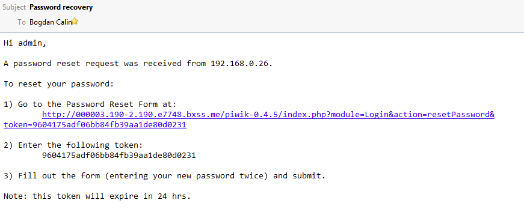

Атаките от тип инжекция са обощение за множество различни техники за постигане на желан ефект чрез надхитряне на дадена система. При атака чрез инжекция, атакуващият вкарва нежелани данни в дадена програма. Инжектираните данни се обработват от системата като обикновени такива. В резултат на това се получава нежелан от потребителя изход, от който атакуващият може да се възползва.
Инжекциите са сред най-старите инструменти за атака над уеб приложения. Те водят до за кражба на данни, загуба на данни, загуба на цялостност на данни, отказ в системата, както и цялостно сриване на системата. Най-честата причина за уязвимост към инжекции е слабо валидиране на потребителски вход.
Този тип атака се смята за един от най-големите проблеми в киберсигурността. OWASP Top 10 я поставя на първо място като опасност в интернет заплахите, при това с основание. Атаките чрез инжекции, най-вече SQL инжекции (SQLi атаки) и скриптове през сайтове (XSS), са не само опасни, но и много разпространени, особено в остарелите legacy приложения. В този доклад няма да говоря за XSS, защото друг колега има такава тема, а не трябва да се припокриваме.
Това, което прави атаките чрез инжекции толкова трудни за предотвратяване е огромната площ, по която те могат да се случат (особено XSS и SQL атаките). Също така този тип атаки са много добре анализиран и ясен проблем, който позволява на злонамерените лица да знаят точно какво правят. Поради тази причина съществуват множество отлични инструменти, които позволяват дори на хора с малък опит да намират такива слабости и да се възползват от тях.
Инжектирането на код или изпълнението на код от разстояние (RCE) позволява на атакуващият да изпълни злонамерен код като резултат от атака чрез инжекция. Атаките чрез инжекция на код са различни от атаките чрез инжекция на системни команди. Възможностите за атакуващия зависят от ограниченията на сървър-клиент интерпретатора (например PHP, Python, и други). В някои случаи, атакуващият може да е способен да стигне от инжекция на код до инжекция на системни команди.
Обикновено, инжекции на код се случват, когато приложение обработва входни данни без предварително да ги валидира. Ето примерн код на PHP приложение като пример за уязвимост от инжекция на код:
/**
* Get the code from a GET input
* Example - http://example.com/?code=phpinfo();
*/
$code = $_GET['code'];
/**
* Unsafely evaluate the code
* Example - phpinfo();
*/
eval("\$code;");
На основа горния пример, атакуващият би могъл да използва следния трик, за да изпълни PHP код. Като резултат, PHP информационната страница ще се покажe.
http://example.com/?code=phpinfo();
Атакуващият може да е способен да превърне инжектиране на код в инжектиране на команда в самата операционна система на сървъра. Използвайки примера от горната подточка, атакуващият може да изпълни командата whoami, изполвайки функцията system() на PHP
http://example.com/?code=system('whoami');
Веднъж получил достъп до системата, атакуващият има възможност да инсталира допълнителен зловреден софтуер и от там да постигне още по-големи щети върху системата и дори върху други системи в интернет.
За щастие е много лесно да се тества дали сайт или уеб приложение е уязвимо от инжектиране на код и други потенциални слабости в системата, чрез използване на автоматизиран скенер за сайтове (например Acunetix vulnerability scanner.)
Ако намерите уязвимост от инжектиране на код, най-ефективният метод за тяхното елиминиране е да се избягва оценяване на код на всяка цена освен ако не е абсолютно необходимо (например, няма друг начин да се постигне желаната функционалност освен чрез оценка на кода). Основно оценяване на код, който съдържа потребителски вход е опасно и почти винаги води до проблеми. Има популярна мантра за PHP оценявщата функция: “eval() is evil”. Ако оценяване на код е необходимо трябва да се използват силни валидации на входа. Това изисква колкото се може повече ограничения за непроверени данни. Важно е да се запомни, че атакуващите могат да използват различни инструменти, за да заобиколят валидиращите условия.
CRLF инжекции са друг тип инжекционни атаки. Може да се използва, за да се стигне до по-сериозни зловредни атаки като например Cross-site Scripting (XSS), инжекция на уеб страница, отравяне на кеша и други. Уязвимост към CRLF съществува ако атакуващият е способен да въведе CRLF символи в уеб приложението, например чрез потребителски вход или HTTP заявка.
CRLF абревиатурата се отнася за "Carriage Return and Line Feed". CR и LF са специални символи (ASCII 13 и 10 съответно, които се изобразяват по следния начин - \r\n) и се използват, за да се отбележи край на съответния ред и да се премине на нов. CRLF се използва в някои операционни системи като Windows (но не и Linux/UNIX) и в интернет протоколи като HTTP.
Това са двете най-чести срещания на атаки чрез CRLF инжекции: отравяне на логове и разцепване на HTTP отговори. В първия случай атакуващият отравя логоврете като поставя нов ред и добавя още редове. Тази атака се използва, за да се заличи друга атака, или за да се заблуди системния администратор. В другия случай CRLF инжекцията се използва, за да се добавят HTTP хедъри в HTTP отговора и по този начин да се стигне до XSS атака, например, което да доведе до проблеми в системата. Подобна техника, наречена инжекция на имейл хедъри, може да се използва за добавяне на SMTP хедъри към имейл.
HTTP протоколът използва CRLF символни последователности, за да означи къде един хедър свършва и започва друг. Също така ги използва, за да отбележи къде свършват хедърите и къде започва съдържанието на уеб сайта.
Ако атакуващият добави един CRLF символ той може добави нов хедър. Ако това е например хедър за локация, атакуващият може да пренасочва потребителите на сайта към друг сайт по негов избор. Обикновено това е с престъпна цел и се прави фишинг. Тази техника се нарича инжекция на HTTP хедър.
Ако атакуващият добави два CRLF, той може перманентно да изключи хедърите и да инжектира съдържание преди истинското уеб съдържание. Инжектираното съдържание може да съдържа JavaScript код. Също така може да се направи така, че браузърът да игнорира реалното уеб съдържание на сайта. По този начин работи разцепването на HTTP отговор комбинирано с XSS атаки.
Следният опростен пример използва CRLF, за да:
http://www.example.com/somepage.php?page=%0d%0aContent-Length:%200%0d%0a%0d%0aHTTP/1.1%20200%20OK%0d%0aContent-Type:%20text/html%0d%0aContent-Length:%2025%0d%0a%0d%0a%3Cscript%3Ealert(1)%3C/script%3E
Влиянието на CRLF може да изглежда ограничено. CRLF инжекциите дори не се споменават в OWASP топ 10 2017 списъка за уеб опасности. Обаче атакуващите могат ефективно да използват CRLF инжекции, за да стигнат до по-сериозни атаки, които да изложат други слабости на уеб приложението. Затова, трябва да се отнасяме сериозно към слабостите към CRLF инжекции.
За щастие е лесно да се тества дали вашият уеб сайт или уеб приложение е уязвимо от CRLF инжекции и други слабости като се използва автоматизиран уеб скенер като Acunetix vulnerability scanner.
Уязвимост към CRLF инжекции обикновено са отстранени от уеб фреймъркове автоматично. Дори да не бъде засечена, уязвимостта към такива неща е лесна за остраняване чрез следните опции:
Честа практика е уеб страници и приложения да имплементират форми за обратна връзка, които като краен резултат изпращат имей съобщения към желания получател. Повечето пъти, подобни форми използват хедъри. Тези хедъри се интерпретират от имейл библиотеката на сървъра и се преобразуват в SMTP команди, които се обработават от SMTP сървърa
За съжаление, потребителският вход често не е валидиран преди да се изпрати към имейл библиотеката. В подобни случаи формата за контакт може да е уязвима към инжектиране на имейл хедъри (още наричани SMTP хедър инжекции или просто имейл инжекции). Зловреден потребител би могъл предостави допълнителни хедъри в съобщение, като по този начин да инструктира мейл сървъра да се държи по-различно от очакваното.
Имейл инжекцията не е директна заплаха за собственика на уеб сървъра, но уязвима форма за контакти може да се използва за изпращане на спам или фишинг. Това я прави сериозна заплаха за сигурността на уеб приложението или сайта.
SMTP протоколът (Simple Mail Transfer Protocol) е един от най-старите протокили в интернет. Оригинално той само приема малка пориця команди, които само уточняват кой изпраща имейла и кой го получава. С времето сложността се увеличава, тъй като имейлите стават по-подрбни, и заради това се домавят имейл хедърите.
За да разберете как работи SMTP трябва първо да разберете разликата между съдържанието на плик за писмо и съдържанието на писмото. Пликът е първоначалната част от съобщението и благодарение на нея правилният човек разбира, че писмото е за него.
Имейл хедърите не са част от SMTP протокола. Те се интерпретират от мейл клиента (за да покажат имейла правилно), но също и от някои библиотеки за имейли в някои програмни езици. Ето няколко примера за такива хедъри:
Ето примерен SMTP диалог
> MAIL FROM:<postmaster@acunetix.com>
< 250 OK
> RCPT TO:<anna@example.com>
<250 OK
> RCPT TO:<barbara@example.com>
< 250 OK
> DATA
< 354 Send message content; end with <CRLF>.
> Content-Type: text/html
> Date: Wed, 25 Dec 2019 00:00:01
> From: Santa Claus <santaclaus@acunetix.com>
> Subject: Your Gifts Are Here
>To: Not Naughty <notnaughty@example.com>
>
> Hello!
> Your gifts are here, come to the tree!
> --
> Santa
> .
< 250 OK
Гормият имейл ще се получи от anna@example.com и barbara@example.com. Обаче ще изглежда, че е бил пратен от santaclaus@acunetix.com, а не от postmaster@acunetix.com и те ще видят, че получателят е notnaughty@example.com.
Повечето библиотеки за имейли в уеб езиците за програмиране обикновено не позволяват да се добавят команди за плика директно. Обаче те взимат хедърите, които им се предоставят и ги преобразуват в SMTP команди. Например, ако се добави BCC хедър, библиотеката за имейл ще вземе съдържанието и ще създаде допълнителен RCPT TO. С такива библиотеки атакуващият се нуждае да знае как да добави имейл хедър и ще е способен да създава SMTP команди.
Следният PHP код е пример за типична форма за контакт, която е уязвима за инжектиране на заглавие по имейл. Той взема името и имейл адреса от полетата за въвеждане и подготвя списък на заглавките за имейла.
<?php
if(isset($_POST['name'])) {
$name = $_POST['name'];
$replyto = $_POST['replyTo'];
$message = $_POST['message'];
$to = 'root@localhost';
$subject = 'My Subject';
// Set SMTP headers
$headers = "From: $name \n" .
"Reply-To: $replyto";
mail($to, $subject, $message, $headers);
}
?>
Нападателят може да злоупотреби с тази форма за контакт, като изпрати следната POST заявка:
POST /contact.php HTTP/1.1
Host: www.example2.com
name=Best Product\nbcc:everyone@example3.com&replyTo=blame_anna@example.com&message=Buy my product!
Атакуващият вмъква нов ред (ред за подаване на ред - \n в повечето UNIX и Linux системи и връщане на карета и подаване на ред - \r \n в Windows системи) и добавя хедър на BCC, съдържаща допълнителни имейл адреси. Библиотеката на имейлите преобразува тези адреси в RCPT TO команди и им доставя имейла в допълнение към предвидения получател. Нападателят може да използва такава тактика, за да изпраща анонимно голям брой съобщения. Те могат също да изпращат фишинг имейли, когато получателят вярва, че тези съобщения са от доверен източник.
Въпреки че тази уязвимост не е ограничена до PHP командата за електронна поща, някои имейл библиотеки са естествено устойчиви на нея. Например, SMTPLIB в Python е устойчив, защото SMTP.sendmail () трябва да посочите изричен списък на получатели. Ако нападателят добави заглавки, той само ще промени начина, по който се появява имейл.
iЗа да открие автоматично инжектирането на заглавия на имейли, скенерът за уязвимост се нуждае от посредническа услуга. Откриването на такива уязвимости изисква вектори извън забавяне и забавяне във времето.
Ограничаването на инжектирането на хедър на имейл включва валидиране на въвеждане от потребителя. Не трябва да разрешавате никакви символи за нов ред във въвеждането, защото те позволяват на атакуващия да добави заглавки на имейли. Като цяло, при валидиране на потребителски вход, най-простият и здрав начин за постигане на силна проверка на входа е чрез списък с разрешени символи.
Обичайна практика е един и същ уеб сървър да хоства няколко уебсайта или уеб приложения на един и същ IP адрес. Ето защо хедърът на хоста съществува. Хедъра на хоста указва кой уебсайт или уеб приложение трябва да обработва входяща HTTP заявка. Уеб сървърът използва стойността на това заглавие, за да изпрати заявката до посочения уебсайт или уеб приложение. Всяко уеб приложение, хоствано на един и същ IP адрес, обикновено се нарича виртуален хост. И така, какво представлява атака на заглавна глава на хост?
Какво се случва, ако посочим невалидна заглавна страница на хоста? Повечето уеб сървъри са конфигурирани да предават неразпознатия заглавен хост на първия виртуален хост в списъка. Следователно е възможно да изпращате заявки с произволни хост заглавки до първия виртуален хост.
Друг начин за преминаване на произволни заглавки на хост е използването на заглавката на X-Forwarded-Host. В някои конфигурации това заглавие ще пренапише стойността на хост заглавката. Следователно е възможно да направите следното искане.
GET / HTTP/1.1
Host: www.example.com
X-Forwarded-Host: www.attacker.com
Много уеб приложения разчитат на HTTP хедъра на хоста, за да разберат „къде се намират“. За съжаление това, което много разработчици на приложения не осъзнават, е, че заглавката на хоста на HTTP се контролира от потребителя. Както може би вече знаете, в защитата на приложенията потребителският вход винаги трябва да се счита за опасен и следователно никога не се вярва без правилно да го валидира първо.
Използването на хост хедър е особено често в уеб приложенията на PHP, но това със сигурност не е проблем ендемичен за уеб приложенията на PHP. PHP скриптът в следващия пример е типична и опасна употреба на хост хедър.
<cript src="http://<?php echo _SERVER['HOST'] ?&gl/script.js"&gl
Нападателят може потенциално да манипулира кода по-горе, за да произведе следния HTML изход само чрез манипулиране на заглавната страница на хоста.
<script src="http://attacker.com/script.js">
Двете основни вектори на главни атаки са отравяне на уеб кеш и злоупотреби с алтернативни канали за провеждане на чувствителни операции, като нулиране на паролата.
Отравянето с уеб кеш е техника, използвана от нападател за манипулиране на уеб кеш, за да служи за отровено съдържание на всеки, който поиска страници.
За да се случи това, нападателят трябва да отрови кеширащ прокси, управляван от самия сайт или доставчици надолу по веригата, мрежи за доставка на съдържание (CDNs), синдикатори или други кеширащи механизми между клиента и сървъра. След това кешът ще служи на отровено съдържание на всеки, който го поиска, като жертвата няма никакъв контрол върху злонамереното съдържание, което им се предоставя.
По-долу е пример за това как нападател може потенциално да използва атака на хедс заглавие чрез отравяне на уеб кеш.
$ telnet www.example.com 80
Trying x.x.x.x...
Connected to www.example.com.
Escape character is '^]'.
GET /index.html HTTP/1.1
Host: attacker.com
HTTP/1.1 200 OK
...
<html>
<head>
<title>Example</title>
<script src="http://attacker.com/script.js">
Често срещан начин за реализиране на функцията за нулиране на паролата е генерирането на таен маркер и изпращане на имейл с връзка, съдържаща този маркер. Какво може да се случи, ако нападател поиска нулиране на парола с заглавие на хост заглавие на хоста?
Ако уеб приложението използва стойността на главния хост при съставяне на връзката за нулиране, атакуващият може да отрови връзката за нулиране на паролата, която е изпратена на жертва. Ако жертвата щракне върху отровената връзка за нулиране в имейла, нападателят ще получи символа за нулиране на паролата и може да продължи напред и да нулира паролата на жертвата.
Ще използваме стара версия на Piwik (платформа за уеб анализи с отворен код), която беше уязвима при отравяне с нулиране на паролата чрез атака на хост хедър за демонстрация на тази уязвимост.
Ще използваме стара версия на Piwik (платформа за уеб анализи с отворен код), която беше уязвима при отравяне с нулиране на паролата чрез атака на хост хедър за демонстрация на тази уязвимост.
По време на сканиране Acunetix ще намери страницата за нулиране на паролата и ще инжектира персонализирана заглавка на хоста, насочена към домейн AcuMonitor. Ако е уязвимо, въпросното приложение (стара версия на Piwik в този пример) ще генерира връзката за нулиране на паролата, използвайки тази стойност и ще изпрати имейл на съответния потребител, както следва.
На изображението по-горе обърнете много внимание на местоположението на връзката за нулиране - той посочва домейна на AcuMonitor вместо домейна на уеб приложението.
Ако „жертвата“ (в този случай, тъй като това е автоматизирано сканиране, вероятно е някой от екип по сигурността, провеждащ сканирането, който получава имейла), следва линка, AcuMonitor ще заснеме тази заявка и ще изпрати уведомление обратно на Acunetix като посочва, че трябва да повдигне сигнал за отравяне при нулиране на паролата чрез атака на заглавна глава.
Смекчаването спрямо хост заглавката е лесно - не се доверявайте на заглавката на хоста. Въпреки това в някои случаи това е по-лесно да се каже, отколкото да се направи (особено ситуации, включващи наследен код). Ако трябва да използвате заглавката на хоста като механизъм за идентифициране на местоположението на уеб сървъра, силно се препоръчва да използвате списък с разрешени имена на хостове.
Инжектиране на команда в OS (или просто инжектиране na команда) е вид уязвимост към инжектирането. Потокът, инжектиран от нападателя, се изпълнява като команди на операционната система. Атаките на инжектиране на команда на OS са възможни само ако кодът на уеб приложението включва обръщания на операционната система и потребителското въвеждане се използва при повикването. Те не са специфични за езика - уязвимостите на командната инжекция могат да се появят на всички езици, които ви позволяват да извикате команда на системна обвивка: C, Java, PHP, Perl, Ruby, Python и други.
Операционната система изпълнява инжектираните произволни команди с привилегиите на уеб сървъра. Следователно, уязвимостите на командните инжекции сами по себе си не водят до пълен компромис със системата. Въпреки това, нападателите може да могат да използват ескалация на привилегии и други уязвимости, за да получат по-голям достъп.
Забележка: Инжектирането на командите често се бърка с инжектирането на код. Уязвимостите при инжектиране на кода позволяват на атакуващия да инжектира код на езика за програмиране, на който е изградено уеб приложението.
Разработчикът на примерното PHP приложение иска потребителят да може да вижда изхода на командата Windows ping в уеб приложението. Потребителят трябва да въведе IP адреса и приложението изпраща ICMP пингове на този адрес. За съжаление, разработчикът се доверява на потребителя твърде много и не извършва проверка на входа. IP адресът се предава чрез метода GET и след това се използва в командния ред.
<?php
$address = $_GET["address"];
$output = shell_exec("ping -n 3 $address");
echo "<pre&gr$output</pre>";
?>
Функцията shell_exec изпълнява следната команда на ОС: ping -n 3 8.8.8.8 & dir. Символът & в Windows разделя командите на ОС. В резултат на това уязвимото приложение изпълнява допълнителна команда (dir) и показва на екрана командния изход (списък на директории):
Pinging 8.8.8.8 with 32 bytes of data:
Reply from 8.8.8.8: bytes=32 time=30ms TTL=56
Reply from 8.8.8.8: bytes=32 time=30ms TTL=56
Reply from 8.8.8.8: bytes=32 time=35ms TTL=56
Reply from 8.8.8.8: bytes=32 time=35ms TTL=56
Ping statistics for 8.8.8.8:
Packets: Sent = 3, Received = 3, Lost = 0 (0% loss),
Approximate round trip times in milli-seconds:
Minimum = 30ms, Maximum = 35ms, Average = 33ms
Volume in drive C is OS
Volume Serial Number is 1337-8055
Directory of C:\Users\Noob\www
(...)
Можете да използвате различни специални символи, за да въведете произволна команда. Най-простият и най-често срещаният за Linux е запетайката (;), а за Windows - ampersand. Следните полезни натоварвания за скрипта ping.php също ще работят:
address=8.8.8.8%3Bwhoami (; character, Linux only)
address=8.8.8.8%7Cwhoami (| character)
address=8.8.8.8%7Cwhoami (| character)
address=invalid%7C%7Cwhoami (|| characters, the second command is executed only if the first command fails)
<%3E(whoami) (> character, Linux only)
%60whoami%60 (` character, Linux only, the result will be reported by the ping command as an error)
Има няколко метода за гарантиране на сигурността на приложението ви и предотвратяване на произволно изпълнение на команда чрез инжектиране на команда. Най-простият и безопасен никога не е да използвате обаждания като shell_exec в PHP, за да изпълнявате команди на хост операционна система. Вместо това трябва да използвате еквивалентните команди от езика за програмиране. Например, ако разработчикът иска да изпраща поща чрез PHP на Linux / UNIX, те могат да бъдат изкушени да използват командата за електронна поща, налична в операционната система. Вместо това те трябва да използват функцията mail () в PHP.
Този подход може да е труден, ако няма еквивалентна команда на езика за програмиране. Например, няма директен начин за изпращане на ICMP пинг пакети от PHP. В такива случаи трябва да използвате входно саниране преди да предадете стойността на команда с черупки. Както при всички видове инжекции, най-сигурният начин е да използвате бял списък. Например в ping.php скрипта можете да проверите дали адресната променлива е IP адрес:
$address = filter_var($_GET["address"], FILTER_VALIDATE_IP);
Не се препоръчва да използвате черни списъци, тъй като нападателите може да намерят път около тях. Ако обаче задължително трябва да използвате черен списък, трябва да филтрирате или да избягате специални символи.
{kind=link}